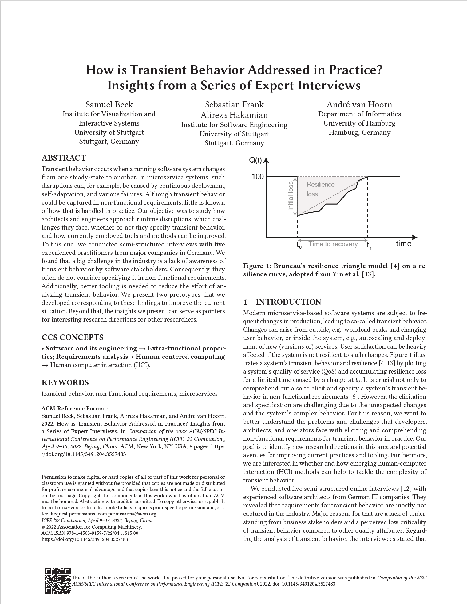

How is Transient Behavior Addressed in Practice? Insights from a Series of Expert Interviews
(opens in new tab)
Venue. ICPE (2022)
Materials.
DOI(opens in new tab)
PDF(opens in new tab)
Abstract. Transient behavior occurs when a running software system changes from one steady-state to another. In microservice systems, such disruptions can, for example, be caused by continuous deployment, self-adaptation, and various failures. Although transient behavior could be captured in non-functional requirements, little is known of how that is handled in practice. Our objective was to study how architects and engineers approach runtime disruptions, which challenges they face, whether or not they specify transient behavior, and how currently employed tools and methods can be improved. To this end, we conducted semi-structured interviews with five experienced practitioners from major companies in Germany. We found that a big challenge in the industry is a lack of awareness of transient behavior by software stakeholders. Consequently, they often do not consider specifying it in non-functional requirements. Additionally, better tooling is needed to reduce the effort of analyzing transient behavior. We present two prototypes that we developed corresponding to these findings to improve the current situation. Beyond that, the insights we present can serve as pointers for interesting research directions for other researchers.
Link to this page: